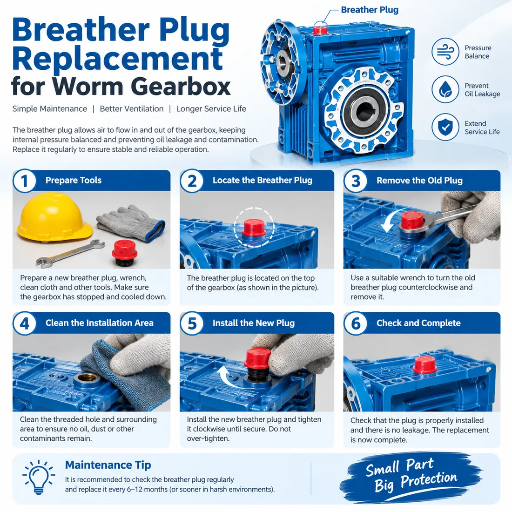

What Are the Main Components in a Worm Gearbox?
A worm gearbox uses a screw-like worm shaft to drive a toothed worm wheel. This right-angle arrangement converts motor rotation into lower output speed and higher torque.
- Worm shaft: the input element, commonly made from hardened alloy steel.
- Worm wheel: the driven gear, often made with a bronze gear rim for reliable sliding contact.
- Bearings and seals: support the shafts and retain the lubricant.
- Housing and lubricant: maintain alignment and control operating temperature.
Why Do Material Choices Matter?
Worm gearing works with substantial sliding contact. A hardened steel worm and a correctly selected bronze worm wheel are widely used because they balance strength, wear resistance and sliding performance. The appropriate material grade still depends on torque, duty cycle, input speed, temperature and lubrication.
What Causes Worm Gear Wear?
Common causes include overloading, insufficient or incorrect lubricant, excessive temperature, contamination, misalignment and high starts per hour. A gradual rise in noise, temperature or backlash may indicate that an inspection is needed.
Selection Checks Before Ordering
For a reliable recommendation, confirm:
- Required output torque and speed
- Input motor power and speed
- Ratio and service factor
- Mounting position and available installation space
- Duty cycle, ambient temperature and lubrication requirements
- Output shaft, flange and motor interface
Keep the Gearset Working Reliably
Correct lubrication and installation are as important as the gearset itself. Confirm the oil level and mounting position, and for a gearbox designed for vented operation, make sure the correct breather plug is fitted before startup. Read our breather plug installation guide and worm gearbox oil-leak troubleshooting guide.
Need Help Selecting a Worm Gearbox?
SMK Transmission supplies NMRV/RV worm gear reducers and worm gear motors for industrial machinery. Share the required torque, ratio, motor power and mounting position for a practical recommendation.